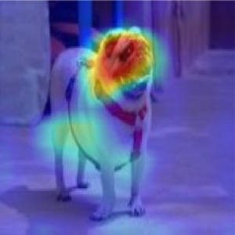
The Dual Identity in Explainable AI
Taking XAI systems out of the lab requires moving beyond strict algorithmic transparency and treating explainability as a fundamental design challenge grounded in responsible AI principles.
PhD Student in Human-AI Interaction and Explainable AI
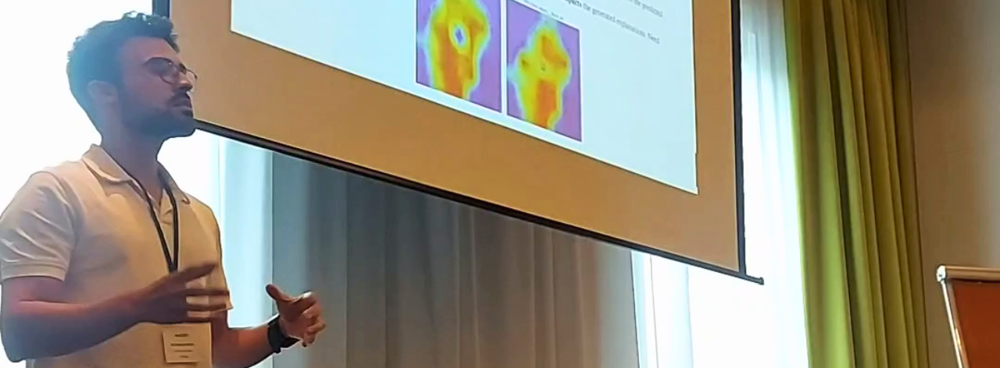
I'm a PhD student in Explainable AI and Human-AI interaction. My broader research focuses on the intersect between Explainable AI and Human-AI interaction in high-stakes domains. I study how domain experts verify and perceive Explainable AI outputs during their decision-making processes. Particularly, I focus on doing user research on dimensions like expert scrutiny, agency, and contestability.
Thoughts and articles on Explainable AI, Human-Computer Interaction, and building interactive intelligent systems.

Taking XAI systems out of the lab requires moving beyond strict algorithmic transparency and treating explainability as a fundamental design challenge grounded in responsible AI principles.
My projects focus on the practical challenges of designing and evaluating intelligent systems from a human-centered perspective.
As the core of my PhD thesis, I study how domain experts in high-stakes domains (e.g., agriculture) verify and perceive Explainable AI outputs during their decision-making processes. This involves studying the impact of explainability on user dimensions like expert scrutiny, agency, and contestability.
As a team member of the European Horizon funded VineSentinel project (through the AGRARIAN call), I dedicate my time to the research and validation of human-in-the-loop initiatives. My work focused on doing user research (through a qualitative user study) and taking the research outputs into an interactive viticulture web application.
As the central focus on my Masters degree, I developed an indoor positioning system for multi-device association in cross-device environments. This research resulted in a machine learning-based predictive system using Wi-Fi and Bluetooth technologies.
As an undergraduate and graduate student, I gained valuable hands-on experience building and deploying software in various industry roles.
I worked on large-scale international core system transformation projects in the insurance industry. My responsibilities included translating client requirements to actionable development tickets, Java development, and leading a small development team.
Web scrapping and data analysis.
Backend software development and deployment.
During my PhD, I have been guiding and teaching students in core computer science disciplines.
I serve as a visiting teaching assistant for the courses:
I supervise master's thesis whose topics are related to my research, providing guidance on research design, methodology, and writing.
My research has been published in peer-reviewed international conferences including ACM CHI, IUI, CSCW and ICMI.
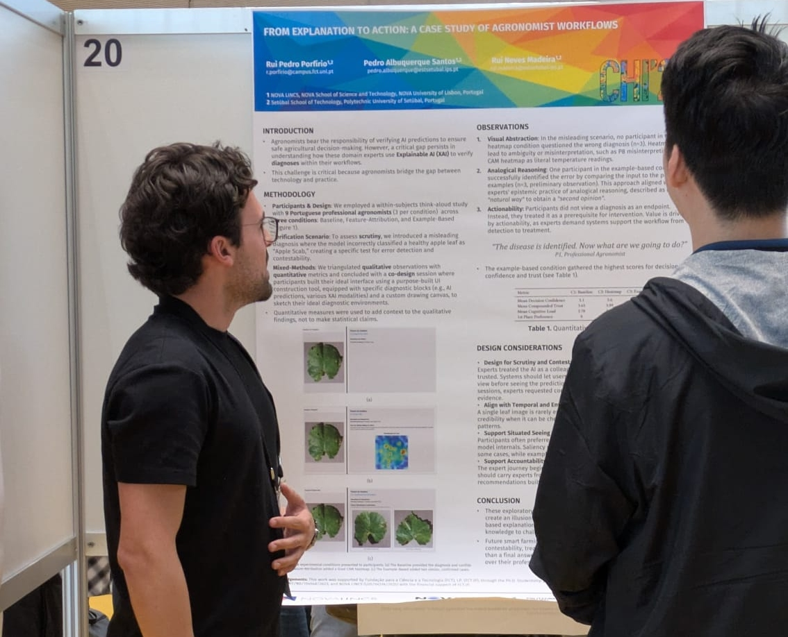
Rui Pedro Porfirio, Pedro Albuquerque Santos, Rui Neves Madeira
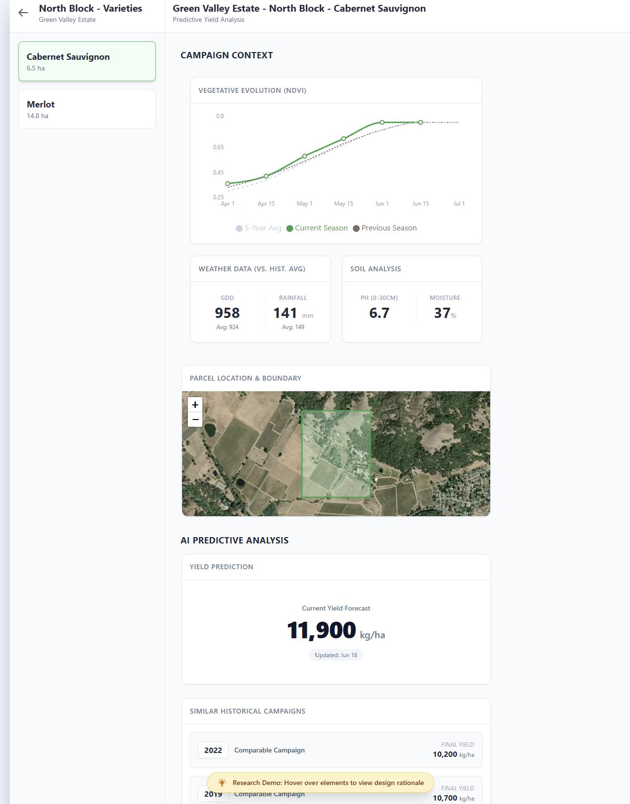
Rui Pedro Porfirio, Rui Neves Madeira, Pedro Albuquerque Santos
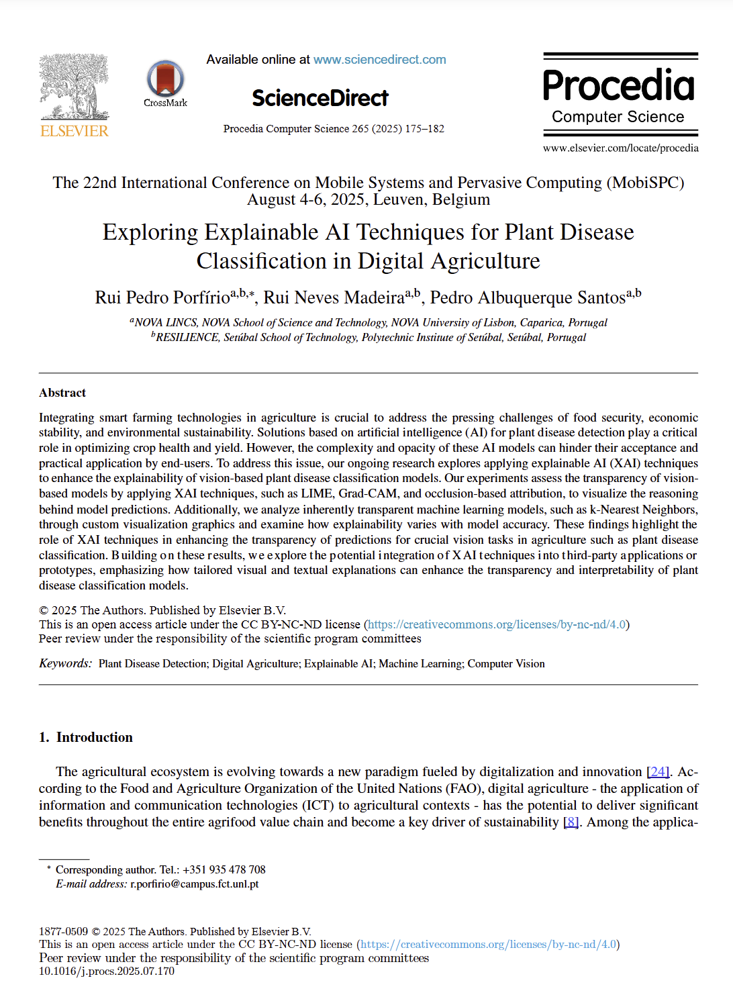
Rui Pedro Porfírio, Rui Neves Madeira, Pedro Albuquerque Santos
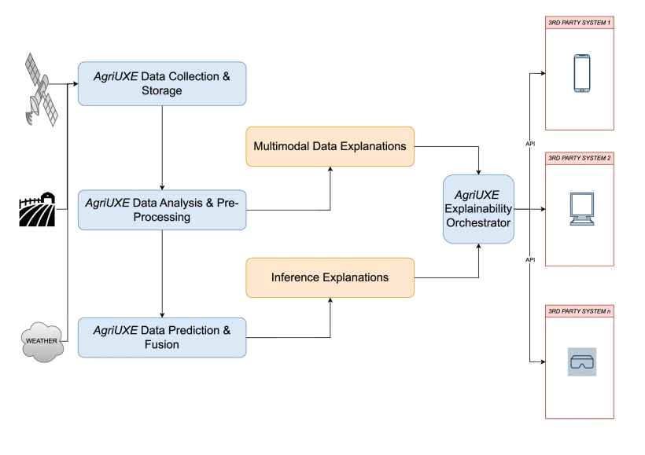
Rui Pedro Porfirio, Rui Neves Madeira, Pedro Albuquerque Santos
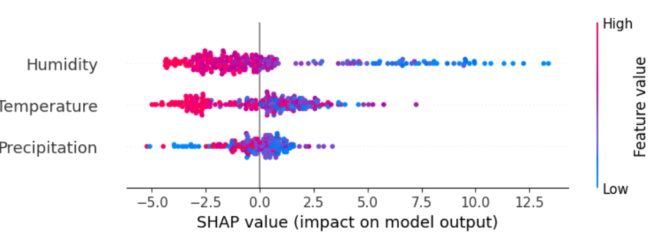
Rui Pedro Porfirio, Rui Neves Madeira, Pedro Albuquerque Santos
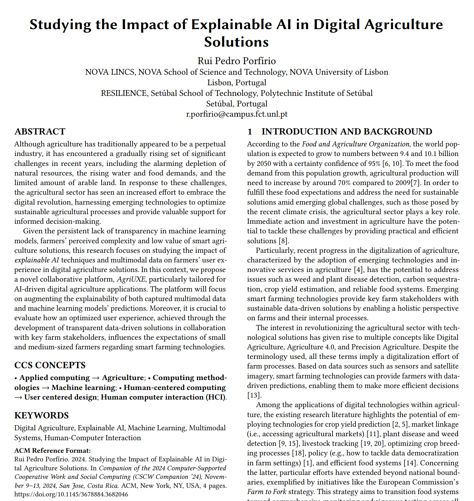
Rui Pedro Porfirio, Rui Neves Madeira, Pedro Albuquerque Santos
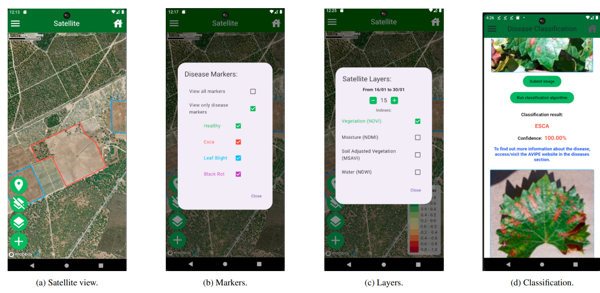
Miguel Madeira, Rui Pedro Porfirio, Rui Neves Madeira, Pedro Albuquerque Santos
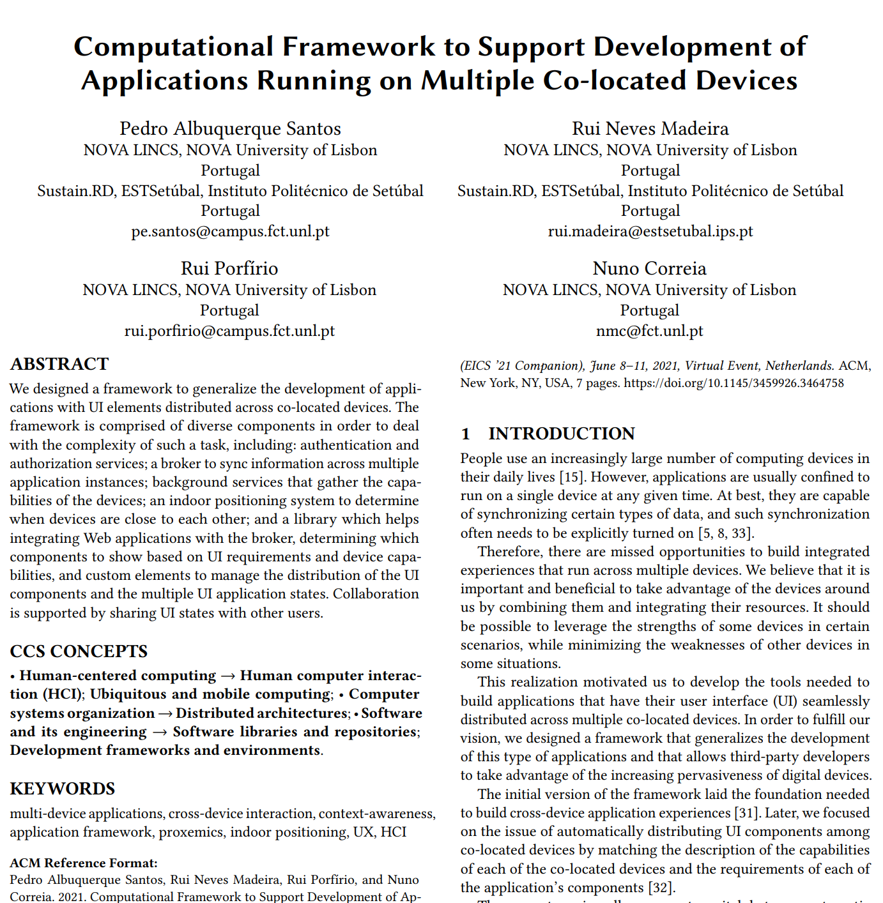
Pedro Albuquerque Santos, Nuno Correia, Rui Pedro Porfirio, Rui Neves Madeira
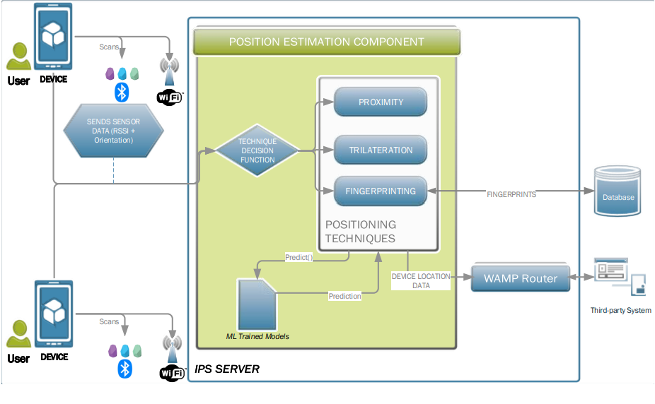
Pedro Albuquerque Santos, Nuno Correia, Rui Pedro Porfirio, Rui Neves Madeira
I am affiliated with the NOVA LINCS research lab at NOVA University of Lisbon.
I have served as a peer reviewer for international conferences like ACM CHI, HRI, and IUI.
I have served as a peer reviewer for journals such as Computers and Electronics in Agriculture, and Artificial Intelligence in Agriculture.
If you would like to get in touch, please feel free to reach out via email or connect with me on LinkedIn.